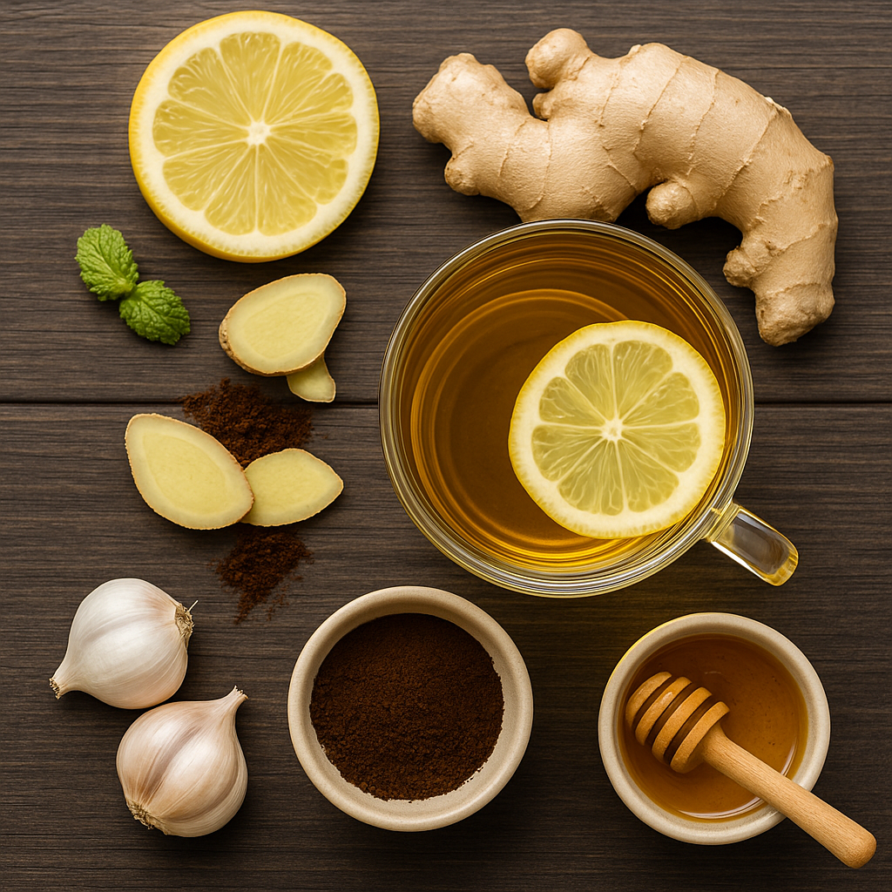

Receita Para Acabar com Impotência

Ingredientes simples encontrados em casa — sem relações sexuais por 10 dias para melhores resultados.
- 2 dentes de alho
- Suco de meio limão
- 1 colher de café Ricoff (encontra nas mercearias)
- Meia banana madura
- 1 colher de açúcar
- Gengibre picado
Modo de preparo:
- Pica o alho e o gengibre.
- Espreme o limão e mistura tudo.
- Acrescenta o café, o açúcar e a banana amassada.
- Mexe bem até ficar homogéneo.
Como tomar:
Toma uma vez por dia, de manhã em jejum, por até 10 dias. Evita relações sexuais durante esse período.
Importante:
O vídeo não mostra banana nem gengibre — estes são reforços extras para acelerar o resultado.